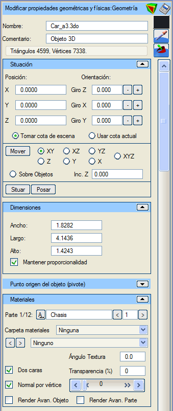
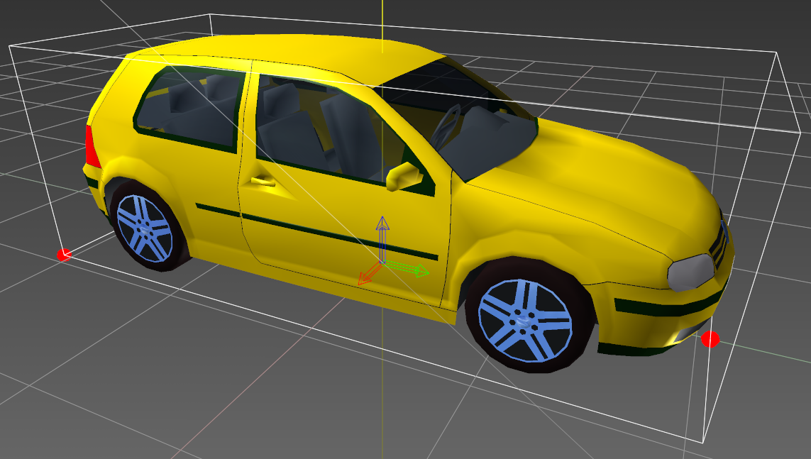

| |
|
3B Nesne
|
|
Genel Bilgiler Bu menüde, genel olarak nesnelerin tüm özellikleri ayarlanabilir. Sahnedeki tüm nesneler, gelişmiş düzenleme aracılığıyla bu "türe" dönüştürülebilir: kutular, küreler, borular, kamalar, araziler, proje elemanları (taşıt yolları, banketler, yarmalar, dolgular...) ve parametrik nesneler. Bu türe bir kez dönüştürüldükten sonra başka bir türe dönüştürülemezler. Üçgen olarak (bağımsız veya bitişik) oluşturulan nesneler ve çizgilerden yükseltilerek oluşturulan nesneler, oluşturma işlemi bittikten sonra otomatik olarak bu türe geçer. Nesnelerin üçgenleri parçalar halinde düzenlenebilir. Her bir parçaya diğer parçalardan farklı bir renk, şeffaflık veya malzeme atanabilir. Nesneler tek bir parçadan da oluşabilir. İçe aktarılan veya yüklenen nesnelere bu tip atanır. Seçenekler İsim: nesneyi bir isimle tanımlamayı sağlar. Yorum: bu nesneye açıklayıcı bir yorum eklemeyi sağlar.  Nesnenin "Gelişmiş Düzenleme" moduna girer. Nesnenin "Gelişmiş Düzenleme" moduna girer. Nesneyi çeşitli formatlarda kaydetmeyi sağlar. Nesneyi çeşitli formatlarda kaydetmeyi sağlar. Ardından 3B görüntüleyicide seçilecek pikselin rengini nesnenin mevcut parçasına atar. Ardından 3B görüntüleyicide seçilecek pikselin rengini nesnenin mevcut parçasına atar. Ardından 3B görüntüleyicide seçilecek malzemenin özelliklerini nesnenin mevcut parçasına atar. Ardından 3B görüntüleyicide seçilecek malzemenin özelliklerini nesnenin mevcut parçasına atar.Renk: Renk butonu (bu örnekte siyah) aracılığıyla nesnenin mevcut parçası için bir renk belirtilebilir. Üçgenler ve Köşe Noktaları: nesnenin üçgen ve köşe noktası sayısını bildirir. Konum (X, Y, Z): nesnenin tam konumunu belirtir. Yönelim (X dönüşü, Y dönüşü, Z dönüşü): nesnenin her bir eksen etrafındaki dönüşünü belirtir. Dönüşler Z->X->Y sırasında uygulanır. Z ekseni etrafındaki dönüş (azimut, heading) -400º ile 400º arasında değerler alır. X ekseni etrafındaki dönüş (pitch) -360º ile 360º arasında değerler alır. Y ekseni etrafındaki dönüş (roll) -360º ile 360º arasında değerler alır. Sahneden Kot Al: nesneyi 3B görüntüleyicide taşırken veya yerleştirirken, nesnenin sahnedeki nesnelerden kot almasını sağlar. Mevcut Kotu Kullan: nesneyi 3B görüntüleyicide taşırken veya yerleştirirken, konuma Istram'ın "Mevcut Kotu"na karşılık gelen kot atanır. Taşı (XY, XZ, YZ, X, Y, Z, XYZ, Nesneler Üzerinde): bir nesneyi 3B ortamda imleç ile sürükleyerek taşımayı sağlayan "taşıma" modunu etkinleştirir. Kutunun taşınmak istendiği düzlemler kısıtlanabilir. "Nesneler Üzerinde" modu, nesneyi imlecin hareket ettiği nesnenin yüzeyine yerleştirir. Taşıma modundan "Esc" tuşuna basarak veya bu butona tekrar tıklayarak çıkılır. Z Artımı: nesnenin yerleştirildiği kota eklenecek bir mesafe tanımlar. Yerleştir: bir nesneyi imleç ile seçilen belirli bir noktaya yerleştirmeyi sağlar. Yüzeye Oturt: nesnenin altındaki "zemine" en iyi şekilde uyum sağlaması için dönüş açılarını yapılandırır. Genişlik, Uzunluk, Yükseklik: nesneyi sırasıyla X, Y ve Z boyutlarında ölçeklemeyi sağlar. Oranı Koru: ölçeklemenin, sadece bir boyutta belirtilse bile üç boyutta da yapılacağını belirtir. Pivot seçenekleri, kutunun hangi noktasının konum koordinatlarına yerleştirileceğini belirtir. Bu nokta şunlar olabilir: -Sınırlayıcı kutunun taban merkezi. -Sınırlayıcı kutunun merkezi. -Sınırlayıcı kutunun minimum koordinatları (varsayılan seçenek). -Minimum koordinatlara göre göreli pivot (X, Y, Z). Sınırlayıcı kutunun minimum koordinatları olarak sol alt köşe alınır. "Kutu" nesnelerinde "sınırlayıcı kutu" tam olarak kendileriyle çakışır. Kullanıcı tanımlı bir pivot belirtilirken, bu işlem sınırlayıcı kutunun köşesine göre göreli öteleme koordinatları (X, Y, Z) girilerek veya nesne üzerine tıklanarak yapılabilir. Bu durumda, ya "Pivotu taşı, geometriyi koru" seçeneği işaretlenerek pivot taşınabilir ya da "Minimum koordinatları taşı, pivotu koru" seçeneği ile geometrinin iç koordinatları değiştirilerek geometri taşınabilir. Parça: her an değişikliklerin nesnenin hangi parçasına uygulandığı, kaç parça olduğu ve parçanın adının ne olduğu bilgisi verilir. Parçanın adı değiştirilebilir. Parçalar arasında gezilebilir. Her bir parçayı tanımlamaya yardımcı olmak için, o parça opak kalırken veya kendi şeffaflığını korurken geri kalanına şeffaflık verilebilir; bu işlem "A" (Parçayı İzole Et) butonu ile yapılır. Aynı butona tekrar basıldığında diğer parçalar normal şeffaflık veya opaklıklarına geri döner. Malzeme Klasörü: mevcut parçaya atanacak malzemelerin aranacağı sınıflandırma klasörünü seçmeyi sağlar. Seçilen klasöre bağlı olarak aşağıdaki malzeme seçici doldurulur. Malzeme Seçici: mevcut parçaya uygulanacak malzemeyi seçmeyi sağlar. "<" ve ">" butonları, seçilen klasördeki malzeme listesinde sırayla gezinmeyi sağlar. Doku Açısı: seçilen malzeme bir doku içeriyorsa, dokunun uygulama düzlemi üzerindeki yönelimi değiştirilebilir. Varsayılan değer 0.0º'dir. Çift Yüzeyli: bu kutucuk işaretlendiğinde, mevcut parçanın üçgenlerinin her iki yüzeyinin de boyanacağı belirtilir. Şeffaflık (%): mevcut parçanın şeffaflık yüzdesini belirtir. Varsayılan olarak şeffaflık %0'dır, yani opaktır. Bu değer, altındaki yatay kaydırıcı ile de kontrol edilir. Köşe Başına Normal: bu kutucuk işaretlendiğinde, mevcut parçanın her bir köşe noktasında hesaplanmış bir normal vektörü olduğu belirtilir; aksi takdirde her üçgen için bir normal vektör hesaplandığı kabul edilir. Varsayılan olarak işaretlidir. Nesnenin Gelişmiş Render'ı: bu seçenekle, kutunun oluşturulmasında alışılmış OpenGL fonksiyonları yerine "shader"ların kullanılması belirtilir. Bu seçeneğin doğru çalışması, grafik donanımının bu "shader"ların kullanımını desteklemesine bağlıdır. Varsayılan olarak işaretli değildir. Mevcut Parçanın Gelişmiş Render'ı: bu seçenekle, nesnenin tamamına uygulanmasa bile, nesnenin mevcut parçasına "shader"ların kullanılması belirtilir. Gelişmiş Düzenleme 
Resimde bir 3B nesne örneği gösterilmektedir. |